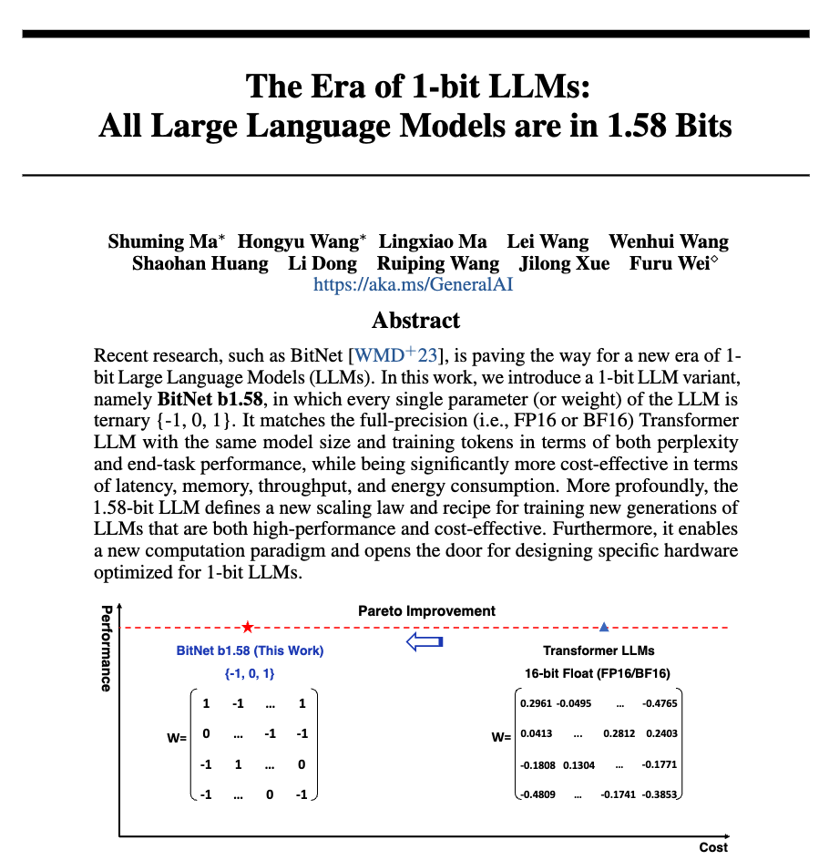

[Paper] 1-Bit Large Language Models (LLMs)
최근 LinkedIn 에서 많이 언급되는 논문이 발표되어 간단하게 살펴본다. 제목이 자극적이긴 하다. “The Era of 1-bit LLMs”

첫 페이지의 그래프부터 아주 직관적으로 논문의 내용을 드러내고 있다. 현재 많은 LLMs 들은 보통은 FP16, 즉 하나의 데이터 단위를 16bit 의 크기로 다루는 데이터 타입을 기본적으로 사용한다. 그리고 이러한 FP16 데이터 타입은 넓은 범위의 데이터 표현을 매우 잘 해주지만 때로는 불필요하게 많은 데이터를 사용할 수도 있다는 단점을 가지고 있다. 이러한 단점을 보완하기 위해 흔히 quantization, calibration 이라는 과정을 거쳐 데이터의 크기를 8bit 혹은 그 이하의 단위로 줄이는 방법을 사용한다. 이렇게 데이터의 타입의 크기가 줄어들게 되면 아무래서 사용하는 메모리가 적게 들고, 이러한 메모리의 데이터를 옮기는 시간도 적게 들며, 연산의 양도 줄어들게 된다. 즉 현재 LLMs 의 가장 큰 이슈인 높은 비용을 절감할 수 있게 된다.
기존의 연구들이 이러한 취지로 8bit 혹은 그 이하의 4bit 의 데이터 타입을 사용하기 위한 다양한 방법들을 제안한다. 하지만 언제나 엔지니어링 세상에는 trade-off 가 존재한다. 데이터 타입에 사용되는 bit 의 수가 줄어들수록 데이터 타입이 가지는 표현력이 줄어들게 되고 이는 곧 정확도의 성능 저하로 이어지게 된다. 그래서 기존 연구들은 최소한의 성능 저하를 유지한채 사용되는 데이터의 크기를 줄이기 위한 다양한 방법들을 제안한다. 어떻게 데이터를 표현할 것인지, 어느 부분에 어떤 데이터 타입을 사용하는 것이 좋을지 등 다양하고 복잡한 방법들이 제안되어 왔다.
그런데 이 논문은 자극적이게 4bit 도 아닌 1bit 를 사용한 LLMs 을 선보였다. 그리고 첫장의 그래프를 보면 1.58bit 데이터 타입으로 16bit 대비 크기와 비용을 극적으로 줄이면서 성능의 저하 없이 이를 이뤄냈다. 어떤 방법을 사용했는지, 그리고 진짜 이게 가능한지 궁금해진다.
- 어디에서 1bit 데이터 타입을 사용하는지?
- 그래프를 보면 아마도 weight 타입에?
- 성능 저하는 없는지?
- 쉽게 적용가능한지?
BitNet b1.58
이 논문에서 제안하는 BitNet b1.58 모델은 모든 single parameter 나 weight 값들을 {-1, 0, 1} 의 값으로 사용한다. 그리고 이를 위해 새로운 scaling 방법과 training 방법을 제안하고 있다. 제목만 보았을 때, 단순히 quantization 의 한 방법이라고 생각했으나, 모델 자체를 {-1, 0, 1} 의 데이터 타입을 사용하게 설계하여 이를 학습단계에서 부터 사용하게 되는 것 같다. 이로인해 비용 측면에서 기존의 모델보다 효율적으로 모델을 학습시킬 수 있을 것으로 보인다.
이미 기존에 {-1, 1} 만 사용하는 1bit 모델인 BitNet 이 발표되었었다. 이 모델은 앞에서 설명한 모델 경량화를 통한 장점을 극대화 할 수 있었지만, 정확도에 있어 많은 손실이 있었던 것 같다. 그래서 BitNet 의 장점을 유지하며 정확도의 손실을 보완하기 위해 0을 추가하여 BitNet b1.58 을 제안하였다.
논문에서 BitNet 이 기존 LLMs 과 달리 새로운 computation paradigm 을 제안한다고 말하고 있다. 이부분이 좀 중요한 부분이여서 한문단을 더 할애해본다. 기존의 LLMs 같은 경우 기본적으로 Matrix Multiplication 연산이 대부분이다. Transformer 모델의 경우 Weight 와 vector 계산을 반복적으로 수행하기 때문이다. 이때 Matrix Multiplication 의 경우 Multiplication then Addition (accumulation) 의 연산이 필요로해진다. 하지만 BitNet (b1.58) 의 경우 1 일 경우 더하고, 0 일경우 skip, -1 일 경우 빼주면 된다. 즉 weight 를 곱하는 multiplication 과정이 없어지게 된다. 하드웨어 설계 측면에서 곱하기 연산이 사라진다면 연산을 더욱 최적화 할 수 있게 된다. 이게 새로운 LLMs acceleration 개발을 가능하게 할 수 있을 것 같다. 그래서 이 논문에서는 이부분을 힘주어 이야기 하는 것 같다. (여담이지만 최근 OpenAI 에서 새로운 HW 를 만들려고 하는 것도 이러한 부분을 염두해 두었을 것 같다.)

Weight 의 경우 앞에서 설명된 것과 같이 {-1, 0, 1} 의 1.58bit 데이터 타입을 사용하고, activation 의 경우 8bit 를 사용한 것으로 나와 있다.
BitNet 1b 모델과 동일한 구조를 사용하지만, {-1, 0, 1} 데이터 타입을 위한 quantization 방법이 조금 다르고, activation 의 경우도 [-Qb, Qb] 를 사용하여 0 값을 사용하지 않는 것으로 보인다. 시스템적으로는 이러한 변경이 더 최적화될 수 있는 여지가 있으며, 시험적으로 성능에 큰 영향을 주지 않는 것으로 설명되어있다.

위의 그림은 BitNet 1B 논문에서 가져온 그림인데 위의 quantization method 는 linear 레이어에만 적용되어 있는 것을 확인할 수 있다. 또한 dequantization 의 과정을 거치는 것으로 보인다. 즉 BitLinear 에서 적용되는 quantization 을 통해 입력 값들이 scaling 되고 {-1, 0, 1} 의 weight 에 따라서 summation 연산이 수행되고 quantization 에서 사용된 scaling 값을 통해 de-scaling 되는 구조로 보인다. 또한 Attention layer 는 그대로 사용되었다.
Results

앞에서도 설명했듯이 b1.58 의 데이터 타입을 사용하면, 메모리 사용량, 속도, 비용(에너지) 측면에서 많은 이점을 얻을 수 있다. 결과 중 에너지 측면에서 비교한 내용이 눈에 띈다. End-to-end 로 분석하였을 때, 40배 이상의 에너지를 절감할 수 있게 된다. 이러한 하드웨어가 설계되어 적용된다면 LLMs 의 가장 큰 문제인 비용문제를 크게 줄일 수 있지 않을까 싶다.
앞으로 이 연구를 토대로 Mobile/Edge 단에서의 LLMs 적용과 새로운 하드웨어 개발에 좀 더 많은 연구들이 이루어 질 것 같다.